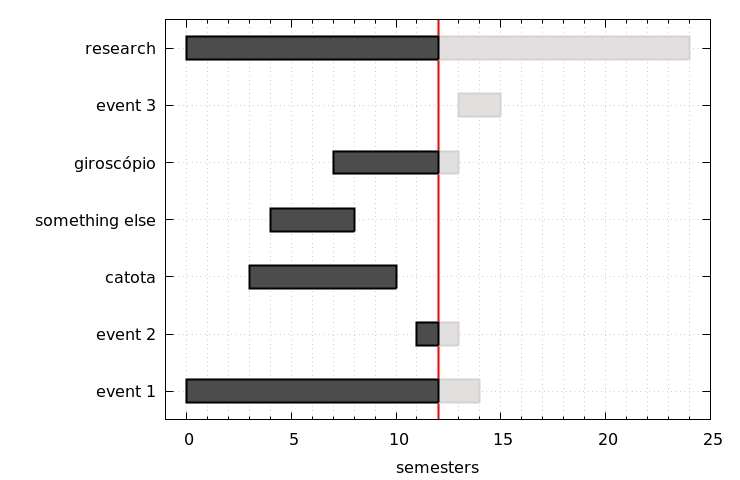

Creating gantt plot using gnuplot
At the beginning of the year, it is the period for writing the proposal (or for the master's thesis or doctoral dissertation), iin some programs, as like the UFPE chemical engineering post-graduate, there is a requirement to prepare a schedule of activities proposed to carry out the work. For this reason, I am writing this post, to help to generate something like a Gantt chart showing when a task has started and ended.
Gnuplot is a very versatile tool when we want to work with graphics generation. Doing a quick survey of how to generate a Gantt chart using Gnuplot, we find some examples or in Python and Latex.
Using some Gnuplot internal functions, we wrote this script that produces a simple Gantt chart (a schedule of activities):

Feel free to use my script and modify it in any way you like!